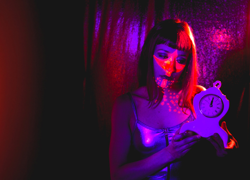

Press
An article titled "Native Apps" was published featuring TBF app.
The Band Famous was a special guest on , broadcast at 10:00pm Eastern Standard Time on Channel 13 (Comcast) & Channel 96 (AT&T).
The Band Famous was interviewed on Thanksgiving Day by JCT92.G Radio. Listen to Archive:

The Band Famous was interviewed on Monday, November 24th, by WeekONLA Radio. Hear them at 01:19:00 - Listen to Archive:

Jay Gabler talks about The Band Famous on The Local Show with host, David Campbell, at 01:14:26 into the show on Sunday, November 23th, 6:00pm - 8:00pm Central Standard Time. Listen to Archive:
Jay Gabler interviewed Norell of The Band Famous and wrote a wonderful feature on TBF on 89.3FM The Current | Local Current Blog | Minnesota Public Radio on Thursday, November 20th:


May 29th - June 11th, 2014: Lavender Magazine
Lavender Magazine printed our debut live performance and App Release (EP Release) Party on Page 19 of their May 29-June 11 2014 issue.
July 11th, 2014: I Love Body Art
I Love Body Art interviewed Zander of the Band Famous and did a wonderful feature on his artistry on Friday, July 11th.